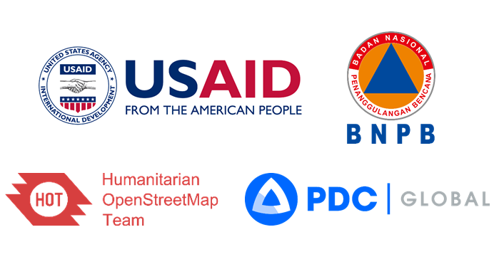

Selamat datang di situs pelatihan untuk surveyor dan manajer proyek. Situs ini dikembangkan melalui kerjasama antara Humanitarian OpenStreetMap Team (HOT) dengan Pasific Disaster Center (PDC) dalam rangka pengembangan kapasitas di bidang pengumpulan data melalui OpenStreetMap untuk mendukung InAWARE, sebuah platform yang dibuat oleh Pacific Disaster Center (PDC).
